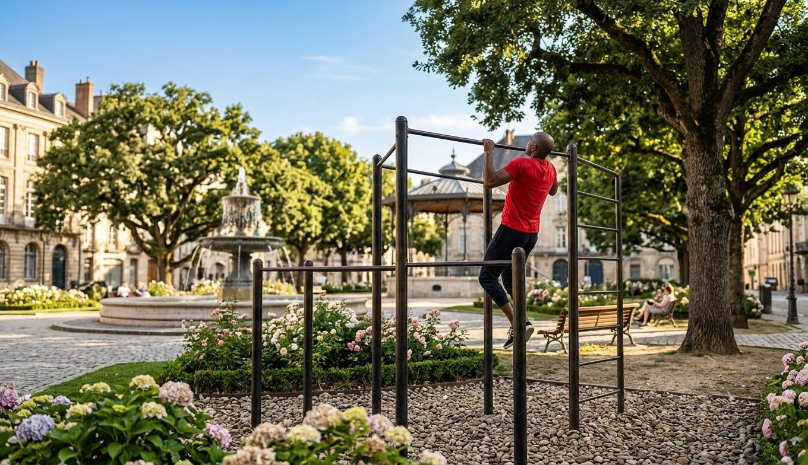

Como Treinar Barra Fixa em Casa Após os 40 Anos de Idade
Quando instalei minha primeira barra em casa, eu fazia 2 repetições sofridas. Hoje, aos 43 anos, faço 15 limpas. Não foi genética, foi método. E é isso que vou te passar aqui, sem frescura de academia.
A barra fixa é o exercício mais honesto que existe. Ou você sobe, ou não sobe. Não tem como roubar na máquina. Para quem passou dos 40, ela é ainda mais importante porque ataca exatamente o que a gente perde com a idade: força de puxar, postura ereta e pegada forte — que é um dos maiores marcadores de longevidade segundo estudos.
Vídeo real: execução correta da barra fixa em casa sem balanço
1. Benefícios da Barra Fixa na Maturidade
Diferente de máquinas guiadas, a barra fixa ativa a musculatura estabilizadora e proporciona benefícios vitais para quem busca longevidade e força funcional:
- Descompressão Vertebral: Ficar suspenso na barra por 30 segundos após o treino auxilia no alívio da pressão intervertebral acumulada ao longo do dia sentado. Eu faço isso todo dia depois do trabalho.
- Desenvolvimento Dorsal e de Postura: Fortalece o latíssimo do dorso e os romboides, combatendo a postura curvada de quem fica no computador. Minha postura melhorou 100% depois que voltei pra barra.
- Aumento da Força de Pegada (Grip): Uma pegada forte está diretamente associada à longevidade e saúde funcional global. Se você não consegue se pendurar 30 segundos na barra, sua pegada está fraca e precisa ser treinada.
- Emagrecimento real: Barra fixa gasta muita energia porque usa costas, bíceps e core ao mesmo tempo. É um dos exercícios que mais ajudam a secar depois dos 40, junto com flexão e agachamento.

2. Estruturando o Treino e Progressão Segura (Método Velho Guerreiro)
Se você ainda não consegue realizar repetições completas, não desanime. Todo mundo começa assim. Use essas 3 estratégias que usei:
- Repetições Negativas: Suba com o auxílio de um banco ou pulando e controle a descida o mais lento possível (3 a 5 segundos). Faz 5 séries de 5 repetições assim, 3x por semana. Isso constrói força de tendão.
- Uso de Elásticos (Bands): Amarra um elástico forte na barra e apoia o pé. Ele te ajuda na subida e te deixa fazer mais repetições limpas. Custa R$ 40 e vale ouro pra quem está recomeçando.
- Variação de Pegadas: Intercale pronada (palmas para frente) que pega mais costas, e supinada (palmas para você) que pega mais bíceps. A supinada é mais fácil pra começar, então comece por ela.
Meu treino atual de barra fixa (30 min, 3x na semana)
Segunda, Quarta e Sexta. Sem falta. Faço 50 repetições totais por treino, não importa em quantas séries. Exemplo: 10x5, 8x6 + 1x2, 5x10. Quando consigo fazer 10x5 fácil, aumento para 60 repetições na semana seguinte. Essa progressão simples me levou de 2 para 15.
Entre as séries de barra, faço flexão e agachamento pra não esfriar e manter o treino metabólico. Assim em 30 minutos eu treino corpo inteiro em casa.
3. Cuidados Essenciais com Ombro e Cotovelo Após os 40
Aqui é onde 90% dos caras da nossa idade se lesionam e param. Aprendi na dor:
1. Nunca comece frio: Antes da primeira barra, faço 2 minutos de rotação de ombro com elástico leve + 20 segundos pendurado na barra só alongando. Tendão frio depois dos 40 não perdoa, já tive tendinite por pular isso.
2. Ombro sempre ativo: Mantenha os ombros para baixo e para trás (deprimidos e retraídos). Nunca deixe o ombro subir até a orelha na barra. Isso sobrecarrega o manguito rotador e causa dor na frente do ombro.
3. Dor aguda = STOP: Dor muscular é normal. Fisgada no cotovelo ou dentro do ombro não é. Se fisgar, para 3 dias, gelo 10 minutos e volta com elástico. Eu faço barra só 3x por semana justamente pra dar tempo do cotovelo se recuperar.
4. Qual Barra Comprar Para Treinar em Casa?
Não compre barra de porta. Ela solta com o tempo e é perigosa para quem pesa mais de 80kg. Compre barra de parede com 6 parafusos, que aguenta 150kg. Paguei R$ 189 na minha na aba produtos e está lá há 2 anos, firme, sem folga. É o melhor investimento que fiz. Se instala em 20 minutos com furadeira.
Conclusão: A Barra Não Mente
Ter uma barra fixa em casa é um excelente investimento para manter a força e a mobilidade após os 40 anos. Você não precisa de academia cara, precisa de constância. Comece hoje: se faz 1, faz 1 todo dia até virar 2. Depois 3. Daqui 6 meses você vai olhar pra trás e ver que construiu costas largas, postura de guerreiro e respeito próprio.
Essa é a diferença entre o cara que fala que vai começar segunda e o Velho Guerreiro que pendura na barra chovendo ou 22h da noite. A barra está lá. Sempre.
Força e disciplina.
— Velho Guerreiro